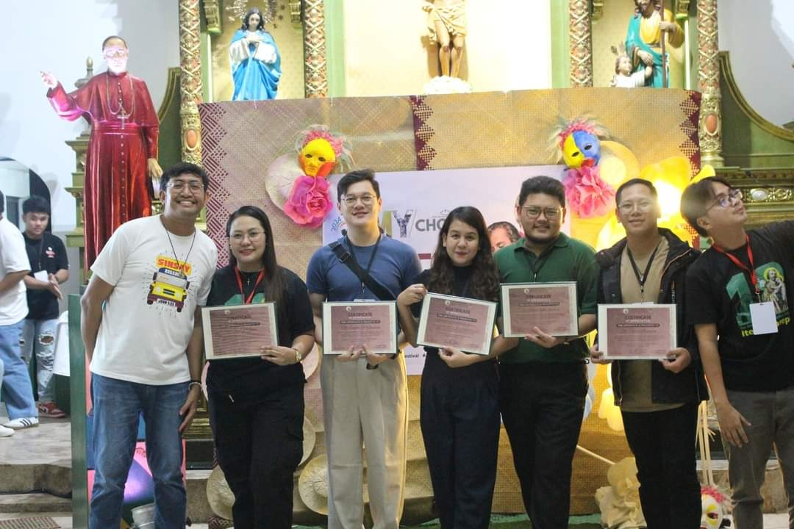
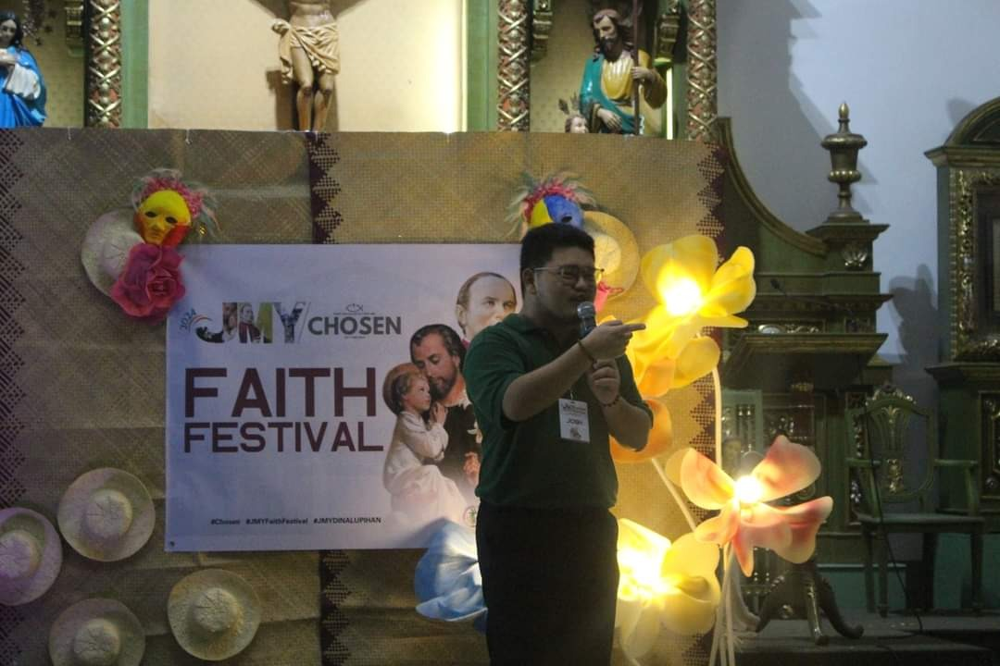
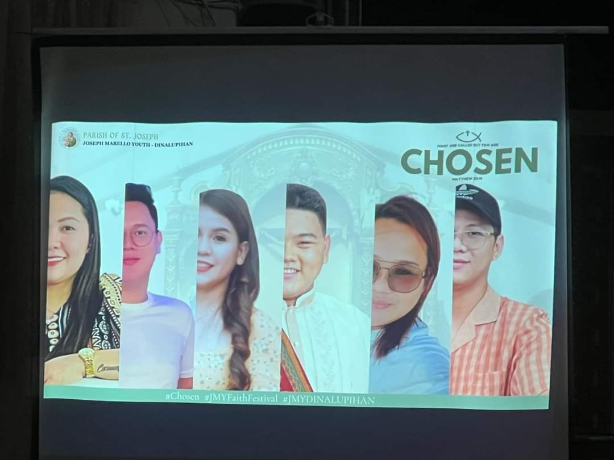

Recognition Through Service · Case · 2025
Returning to JMY: Recognition After Service
In September 2025, nearly five years after concluding my term as President of Joseph Marello Youth, I was invited back to the JMY Faith Festival as a speaker and was recognized for contributions to the development of the youth group.
Recognition record
The return at a glance.
Learn about the event, invitation, recognition, and connection to the earlier leadership journey.
- Organization
- Joseph Marello Youth (JMY), Dinalupihan, Bataan
- Event
- JMY Faith Festival 2025
- Role
- Invited speaker
- Recognition
- Recognized for contributions to the development of the youth group
- Earlier service
- Member, Vice President, and President of JMY from 2016 to 2020
The return
Recognition arrived after the formal role had already ended.
The 2025 Faith Festival brought me back to a youth organization I had joined in 2016 and later served as Vice President and President.
This time, I returned not as an officer responsible for the organization's day-to-day direction, but as an invited speaker and former leader being recognized for earlier contributions to the group's development.
That distinction matters. Service is often most visible while a role is active, but its effects can continue in relationships, institutional memory, practices, and the work that later members inherit and reshape.
Recognition through service
The recognition reflected continuity more than completion.
Being recognized years later made the earlier leadership experience legible in a different way. The value of the work was no longer measured only by what happened during a term of office, but by whether the organization remembered the contribution as part of its own development.
The invitation to speak also made the relationship reciprocal. The organization had once given me a place to learn how to participate, coordinate, decide, and lead. Returning later created an opportunity to give something back through reflection and conversation.
JMY Faith Festival 2025
A return marked by speaking, recognition, and shared memory.
These photos document the 2025 return to the organization and the recognition presented during the Faith Festival.

Recognized for contribution
Former leaders and contributors were recognized during the 2025 Faith Festival for their part in the development of the youth group.

A later generation looking back
The recognition connected the current organization with people who had helped carry it through earlier stages of development.

Returning as an invited speaker
The return also created space to reflect publicly on the organization, its growth, and the experience of serving within it.

Service remembered across time
The event placed past contribution inside the present story of the organization rather than treating it as a closed chapter.
Earlier leadership
This recognition grew from a longer leadership journey.
The earlier case traces the full 2016-2020 progression from member to Vice President to President, including strategy, representation, research, communication, consultation, finance, and organizational stewardship.
Recognition Through Service
Return to the collection.
Explore other experiences where contribution, responsibility, trust, and sustained participation became visible through recognition.
Recognition Through Service →